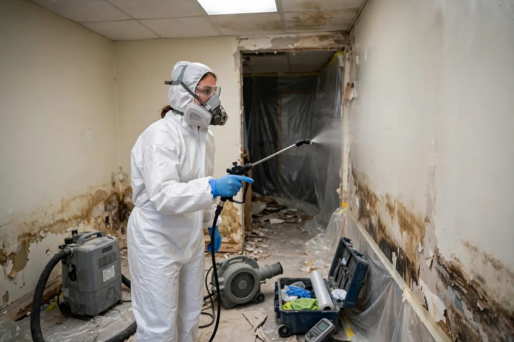

Antimicrobial Treatment in Hollywood, FL
Antimicrobial treatment is the sanitation step that comes after water extraction and cleaning. Once standing water is removed and affected surfaces are cleaned, an antimicrobial product may be applied to discourage microbial growth on those surfaces while drying continues. In Hollywood's humid climate, where damp drywall and framing can stay vulnerable for days, this step is frequently part of the plan — but it is never a substitute for removing water or replacing materials that cannot be salvaged.

Understanding Antimicrobial Treatment in Hollywood
Antimicrobials come into play after Category 2 or Category 3 water events — washing machine discharge, dishwasher overflows, toilet backups, or floodwater that entered from outside. They are also common after any loss where materials stayed wet long enough for musty odors to develop. The products are applied to hard, cleanable surfaces like concrete, framing lumber, and subflooring after those surfaces have been cleaned first. Porous materials that absorbed contaminated water — carpet padding, insulation, saturated drywall — are generally removed rather than treated, because no surface treatment can reach contamination trapped deep inside fibers.
Timing matters with this step. Antimicrobial treatment works best on clean, damp surfaces during the drying phase, not as a last-minute spray over dirt or standing water. In Hollywood homes, where air conditioning keeps indoor humidity down but wall cavities and crawl spaces can stay damp, technicians focus on the hidden areas moisture meters flag: the bottom inches of wall framing, the subfloor beneath a soaked room, the slab under removed flooring. Done right, it is one part of a sequence — extract, clean, treat, dry, verify — not a standalone fix.
How We Handle the Job
The job starts with an assessment of what the water touched and how dirty it was. A clean-water loss from a supply line may need no antimicrobial step at all; a sewage backup almost always does. We confirm the source is controlled, remove standing water, and pull out porous materials that cannot be cleaned. Remaining hard surfaces are vacuumed and cleaned before any product goes on — treatment belongs on clean surfaces, not dirty ones.
Application follows the product label: even coverage on the target surfaces, proper dwell time, and ventilation of the work area while it dries. People and pets stay out of treated rooms until surfaces are dry. Afterward, drying equipment keeps running and moisture readings are tracked until materials reach their dry standard. Related services such as emergency water extraction, structural drying, and flood cleanup often connect to the same loss depending on conditions on site.
Local Response and Insurance Support
Searching for antimicrobial treatment near me usually means you need help without delay. We answer emergency calls around the clock. Documentation — photos and moisture readings — supports conversations with your insurance carrier when the loss is sudden and accidental. We do not decide coverage; we provide clear technical information about the work performed.
When to Call
Call if you have active water, wet materials that are not drying, odors after a leak, or a backup that may involve contaminated water. Early action in Hollywood’s climate is almost always less disruptive than waiting. For neighborhood-specific service, see our service areas. For the full list of capabilities, visit all services.
Frequently Asked Questions
When is antimicrobial treatment actually necessary?
It is most often used after contaminated water events — sewage backups, washing machine or dishwasher discharge, and floodwater from outside — or when materials stayed wet long enough to develop musty odors. Clean-water losses that are extracted and dried quickly often don't need it. The call is made based on the water category and how long materials were wet.
Does antimicrobial treatment kill mold?
These products are made to inhibit microbial growth on treated surfaces; they are not a mold remediation method on their own. If visible mold is already established, the affected material usually needs to be removed under containment rather than sprayed. Treatment is a preventive step for clean surfaces, not a cure for existing growth.
Is it safe to stay in the home during treatment?
People and pets should stay out of rooms being treated until the applied surfaces are dry and the area is ventilated. Once dry, treated surfaces are fine for normal use. If anyone in the household has chemical sensitivities or breathing concerns, mention it before work begins so precautions can be planned.
Will my insurance cover antimicrobial treatment?
When treatment is part of a covered sudden water loss, it is typically documented as part of the overall drying and sanitation scope. We photograph the work and note the products used and areas treated, so you have records for your adjuster. Coverage decisions are always made by your carrier.